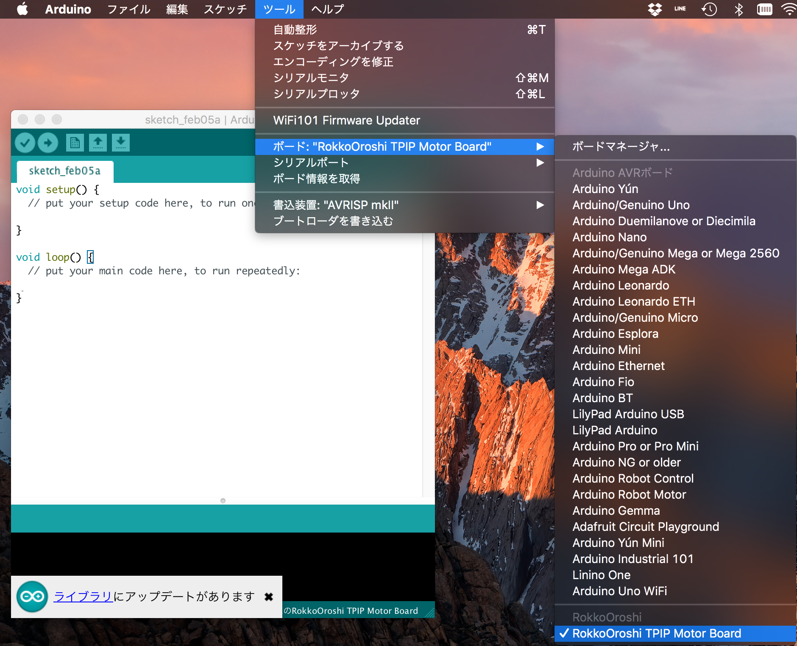

ボードの登録
その辺のArduino互換ボードを使うときは，ArduinoIDEのボード設定をArudinoUnoなど，既存のハードウェアに設定してやるだろうが，
せっかくなのでRokkoOroshiTPIPMotorBoardという名前でボード登録できるようにした．
ボード登録の利点は，ボード依存のライブラリ的なものを自動でincludeさせておくようにできること？
ブートローダーにはoptibootという，早いやつを採用している．
（上のような設定は全て設定ファイルを書くだけで結構簡単にできる．）
Arudino IDEのプログラムが入ったフォルダに移動する
Mac, Windowsだと以下のような場所になる
MacはArudino.appを右クリックして「中身を見る」で中に入っていける
- Mac :
/Applications/Arduino.app/Contents/Java - Windows 32bit :
C:\ProgramFiles\Arduino - Windows 64bit :
C:\ProgramFiles(x86)\Arduino
- Mac :
データをコピー
firmware\RokkoOroshiTPIPMotorBoardを{上のディレクトリ}\hardware\RokkoOroshiTPIPMotorBoardにexamples\RokkoOroshiTPIPMotorBoardを{上のディレクトリ}\examples\RokkoOroshiTPIPMotorBoardに
以上の手順の後，ArduinoIDEを再起動すると ツール → ボード にそれっぽいものが追加されるはず
